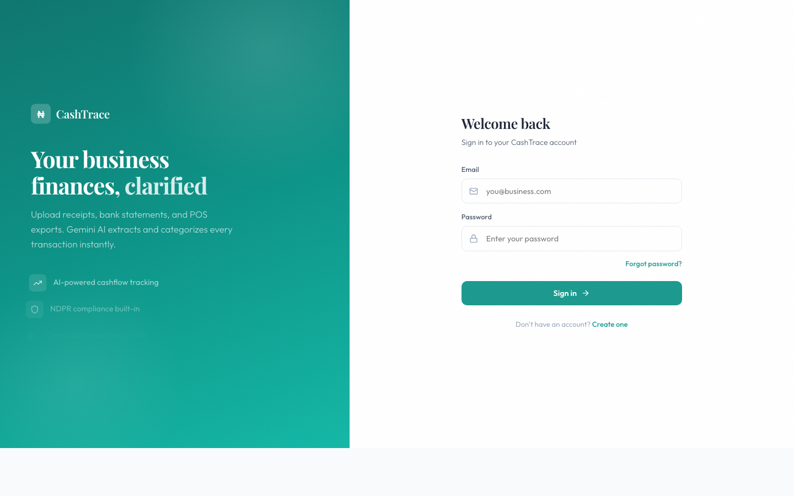
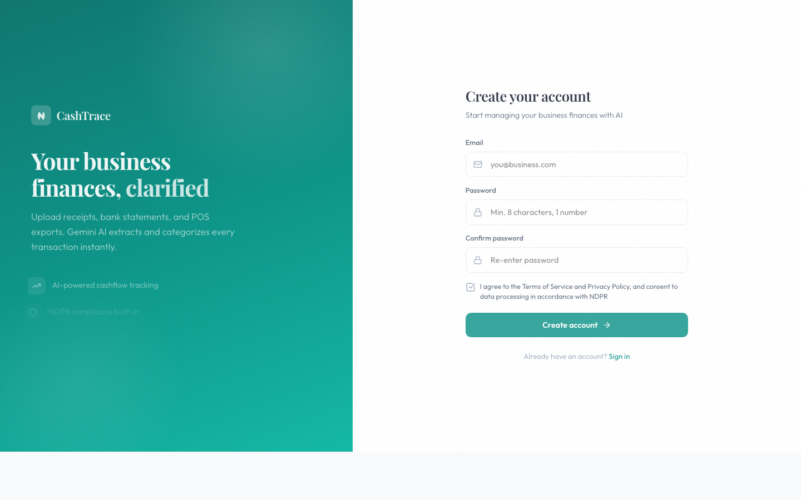
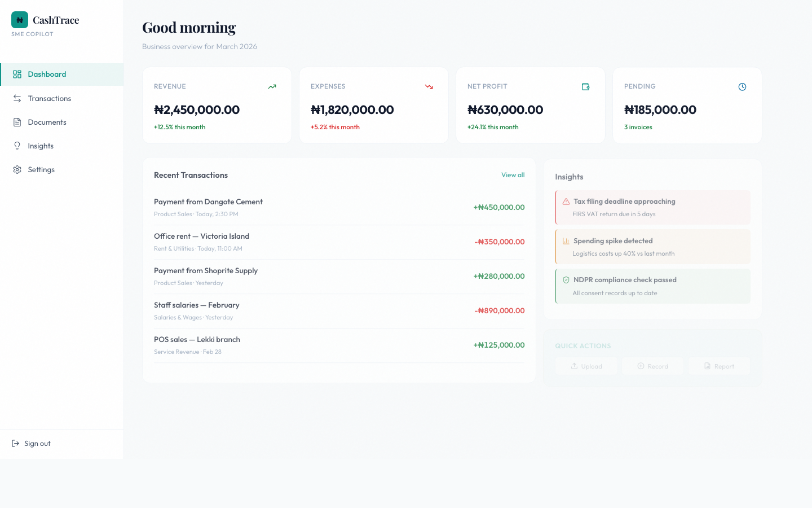
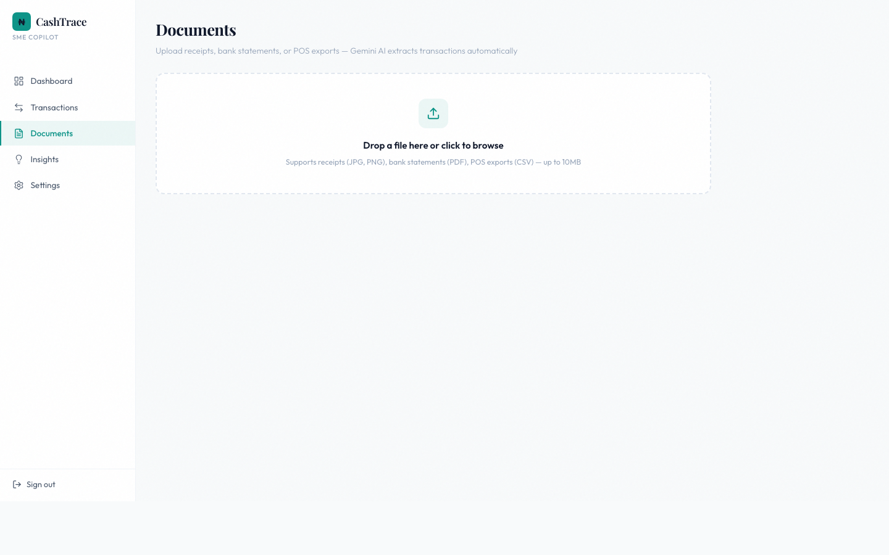
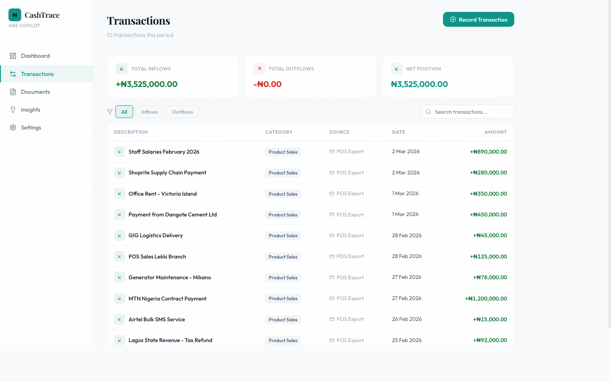
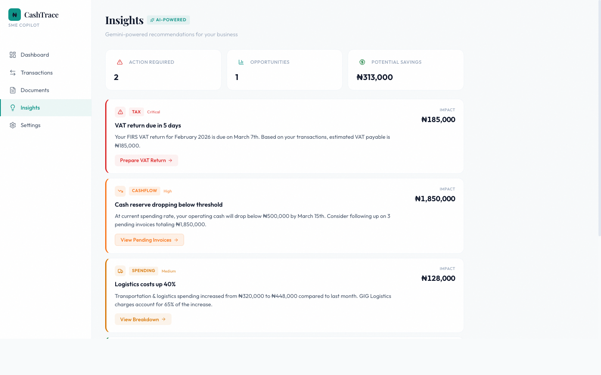
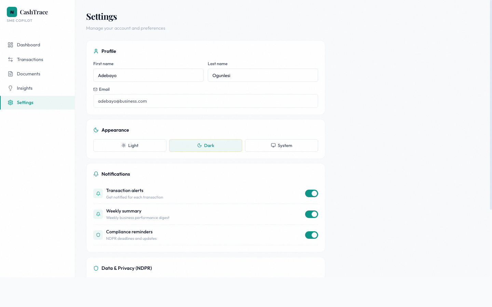

Table of Contents
1. Project Overview
CashTrace is a full-stack platform that helps small and medium enterprises (SMEs) in Nigeria
manage their cashflow using AI. Business owners upload financial documents — receipts, bank
statements, POS export files — and Google Gemini automatically extracts, categorizes, and
organizes every transaction.
The platform is built with compliance at its core, enforcing Nigeria Data Protection Regulation
(NDPR) requirements including consent management, data subject access requests, retention
policies, and breach notification.
Key Insight: Nigerian SMEs process hundreds of paper receipts and bank
statements monthly. Manual data entry is slow, error-prone, and expensive. CashTrace uses
Gemini's multimodal capabilities to turn any document into structured financial data in seconds.
AI Document Extraction
Gemini parses receipts (images), bank statements (PDF), and POS exports (CSV)
Auto-Categorization
13 transaction categories with confidence scores from Gemini
NDPR Compliance
Consent management, DSAR handling, data retention, breach notification
Multi-Source Ingest
Receipts, bank statements, POS exports, and manual entry
Duplicate Detection
Similarity scoring across amount, date, and description
Audit Trail
Immutable log of every transaction change with user attribution
AI Insights
Gemini-powered business recommendations and spending analysis
Multi-Tenant
Strict business-level data isolation with RBAC
2. The Problem We Solve
Over 40 million SMEs operate in Nigeria, and the vast majority still track finances manually —
using paper ledgers, spreadsheets, or basic apps that require tedious data entry. This leads to:
- Hours spent weekly on manual transaction entry from receipts and bank statements
- Miscategorized expenses leading to inaccurate financial reports
- Missed tax deadlines and compliance violations (FIRS VAT, NDPR)
- No real-time visibility into cashflow health
- Duplicate transactions from multiple data sources going undetected
CashTrace eliminates these pain points by letting business owners simply upload their documents
and letting Gemini AI do the heavy lifting — extracting every transaction, categorizing it, and
flagging potential issues automatically.
3. How Gemini AI Powers CashTrace
Google Gemini is the core intelligence layer of CashTrace. We use Gemini's multimodal
capabilities across three distinct document processing pipelines:
3.1 Receipt Parsing (Image → Transactions)
Users photograph paper receipts. The image is sent to Gemini with a structured prompt that
instructs it to extract line items, amounts, dates, vendor names, and payment methods. Gemini
returns structured JSON with each transaction, a category hint, and a confidence score.
📷 Receipt Photo
→
Gemini Vision
→
Structured JSON
→
Categorized Transactions
3.2 Bank Statement Parsing (PDF → Transactions)
PDF bank statements are first converted to text using pdf-parse, then sent to Gemini with
context about Nigerian banking formats. Gemini identifies each transaction row, determines
credit/debit type, extracts counterparty names, and assigns categories.
📄 PDF Upload
→
Text Extraction
→
Gemini Analysis
→
Transaction Records
3.3 POS Export Parsing (CSV → Transactions)
CSV files from POS terminals are parsed with PapaParse, then Gemini analyzes the data to
normalize column names, identify transaction types, and categorize each entry — even when
CSV formats vary between POS providers.
📊 CSV File
→
PapaParse
→
Gemini Normalization
→
Unified Transactions
3.4 AI-Powered Business Insights
Beyond extraction, Gemini analyzes aggregated transaction data to generate actionable business
insights — spending anomalies, cashflow forecasts, tax deadline reminders, and customer
concentration risks. Each insight includes a severity level and recommended action.
4. Tech Stack & Architecture
| Layer |
Technology |
Purpose |
| AI |
Google Gemini (@google/generative-ai) |
Document extraction, categorization, insights |
| Frontend |
Next.js 15 + React 19 |
Dashboard UI with App Router |
| Backend |
Express 4 + TypeScript 5.6 |
REST API with dependency injection |
| Database |
PostgreSQL + Prisma ORM |
Transaction storage, audit trails |
| Cache |
Redis (ioredis) |
Rate limiting, session caching |
| Queue |
BullMQ |
Async document processing jobs |
| Storage |
AWS S3 |
Document file storage |
| Validation |
Zod + AJV |
Runtime schema validation |
| Auth |
JWT + bcrypt |
Stateless auth with refresh tokens |
| Security |
Helmet + CSRF + CORS |
HTTP security headers, CSRF protection |
| Testing |
Vitest + fast-check |
Unit, integration, and property-based tests |
| Container |
Docker (node:20-alpine) |
Multi-stage production build |
Architecture Diagram
┌─────────────┐ ┌──────────────┐ ┌─────────────────┐
│ Next.js UI │────▶│ Express API │────▶│ Google Gemini │
│ (Port 3000)│ │ (Port 4000) │ │ (AI Extraction) │
└─────────────┘ └──────┬───────┘ └─────────────────┘
│
┌────────────┼────────────┐
▼ ▼ ▼
┌──────────┐ ┌─────────┐ ┌──────────┐
│PostgreSQL│ │ Redis │ │ AWS S3 │
│(Data) │ │(Cache) │ │(Documents)│
└──────────┘ └─────────┘ └──────────┘
Project Structure (30+ modules)
src/
├── gemini-integration/ # Gemini AI service, prompts, parsers
├── document-processing/ # Upload, extraction pipeline, job queue
├── transaction-engine/ # CRUD, categorization, duplicate detection
├── compliance/ # NDPR: consent, DSAR, retention, breach
├── access/ # RBAC and business-level data isolation
├── audit/ # Immutable audit trail
├── insights/ # AI-powered business analytics
├── controllers/ # Auth (signup, login, magic-link, etc.)
├── middleware/ # Auth, CSRF, rate limiting, validation
├── frontend/ # Next.js dashboard application
└── ... (20+ more modules)
5. Screen-by-Screen Walkthrough
Below is every screen in the CashTrace application with descriptions and screenshot placeholders.
Take screenshots of each screen and replace the placeholders before generating the final PDF.
5.1 Login Page
Split-panel layout with a teal gradient brand panel on the left showing the CashTrace logo,
tagline ("Your business finances, clarified"), and three feature highlights. The right panel
contains the login form with email and password fields, a "Forgot password?" link, and a
sign-in button. Clean, professional design with Lucide icons.

5.2 Signup Page
Same split-panel layout as login. The form includes email, password, confirm password fields,
and an NDPR consent checkbox ("I agree to the Terms of Service and Privacy Policy, and consent
to data processing in accordance with NDPR"). This consent is stored in the database as required
by Nigerian data protection law.

5.3 Dashboard
The main overview screen after login. Features a sidebar navigation (Dashboard, Transactions,
Documents, Insights, Settings) and a content area with:
- Personalized greeting ("Good afternoon, demo")
- Four summary cards: Revenue, Expenses, Net Profit, Pending — all in Naira (₦)
- Recent Transactions list with color-coded inflows (green) and outflows (red)
- AI Insights panel with severity-coded alerts (tax deadlines, spending spikes, compliance)
- Quick Actions: Upload, Record, Report

5.4 Documents Page (Upload & AI Extraction)
This is where the Gemini magic happens. The page shows a drag-and-drop upload zone that accepts
receipts (JPG, PNG), bank statements (PDF), and POS exports (CSV). After upload:
- A loading spinner shows "Gemini AI is analyzing your document..."
- Once complete, a metadata bar shows processing time, model used, confidence score, and transaction count
- A table displays all extracted transactions with description, category, date, and amount
- A "Save transactions" button persists them to the database

Screenshot: Documents — Gemini Processing
Upload a file during your video recording to capture this live
Screenshot: Documents — Extraction Results
Capture this during your video recording after Gemini finishes extraction
5.5 Transactions Page
Displays all saved transactions fetched from the PostgreSQL database. Features:
- Summary strip: Total Inflows (green), Total Outflows (red), Net Position (teal)
- Filter buttons: All / Inflows / Outflows
- Search bar for filtering by description
- Table with columns: Description (with inflow/outflow icon), Category, Source (Receipt/Bank Statement/POS
Export/Manual), Date, Amount
- Empty state when no transactions exist yet

5.6 Insights Page
AI-powered business recommendations tagged with an "AI-Powered" badge. Shows:
- Summary strip: Action Required count, Opportunities count, Potential Savings amount
- Insight cards with severity levels (Critical/High/Medium/Low/Info), each with a colored left border
- Each insight has: category tag, title, description, impact amount, and action button
- Example insights: VAT return deadline, cash reserve warning, logistics cost spike, NDPR compliance status

5.7 Settings Page
Account management and NDPR compliance controls:
- Profile section: first name, last name, email (read-only)
- Appearance: Light/Dark/System theme toggle
- Notifications: toggles for transaction alerts, weekly summary, compliance reminders
- Data & Privacy (NDPR): Export my data (DSAR), Manage consent, Delete account

6. Live Demo Flow (Video Script)
Use this as your script when recording the walkthrough video. Each step maps to a screen
transition. Estimated total time: 4–5 minutes.
Opening (30 seconds)
Script: "CashTrace is an AI-powered cashflow copilot for Nigerian SMEs.
It uses Google Gemini to automatically extract transactions from receipts, bank statements,
and POS exports — so business owners spend less time on data entry and more time growing
their business. Let me show you how it works."
Scene 1: Authentication (30 seconds)
Show the Login page. Point out the split-panel design — brand panel on the
left with the CashTrace logo and feature highlights, login form on the right.
Click "Create one" to go to Signup. Highlight the NDPR consent checkbox —
"This is required by Nigerian data protection law. We store consent records in the database."
Go back and log in with the demo account. Show the redirect to the Dashboard.
Scene 2: Dashboard Overview (45 seconds)
Walk through the summary cards — Revenue, Expenses, Net Profit, Pending.
"All amounts are in Nigerian Naira, stored as kobo internally to avoid floating-point issues."
Point to Recent Transactions. "These are color-coded — green for inflows,
red for outflows. Each shows the category and timestamp."
Highlight the Insights panel. "These are AI-generated alerts — tax deadlines,
spending anomalies, compliance status. We'll see more of this on the Insights page."
Scene 3: Document Upload & Gemini Extraction (90 seconds) — THE KEY DEMO
Navigate to Documents. "This is where Gemini AI does the heavy lifting.
You can upload receipts as images, bank statements as PDFs, or POS exports as CSVs."
Upload a CSV file (the sample bank statement). Show the drag-and-drop zone
accepting the file.
Show the processing state. "The file is sent to our backend, which calls
Google Gemini's API. Gemini analyzes the document and extracts every transaction with
descriptions, amounts, dates, and categories."
Results appear. Point to the metadata bar — "Processing took X milliseconds,
Gemini identified Y transactions with Z% confidence." Walk through a few rows in the table.
Click "Save transactions". "These are now persisted to our PostgreSQL
database. Watch — it redirects us to the Transactions page."
Scene 4: Transactions (30 seconds)
Show the saved transactions now appearing in the table. "These came directly
from Gemini's extraction. Each has a source tag — Bank Statement, Receipt, POS Export."
Demo the filters. Click "Inflows" then "Outflows" to filter. Use the search
bar to find a specific transaction.
Point to the summary strip. "Total inflows, total outflows, and net position
are calculated in real-time from the database."
Scene 5: AI Insights (30 seconds)
Navigate to Insights. "Gemini also powers our business intelligence layer.
These insights are generated by analyzing transaction patterns."
Walk through 2-3 insight cards. Highlight the severity levels, impact amounts,
and action buttons. "The VAT return reminder alone could save a business from FIRS penalties."
Scene 6: Settings & NDPR Compliance (30 seconds)
Navigate to Settings. Scroll to the Data & Privacy section.
"CashTrace is built with NDPR compliance at its core — users can export their data,
manage consent, or delete their account at any time."
Closing (30 seconds)
Script: "CashTrace turns document chaos into financial clarity. With Gemini
handling the extraction and categorization, Nigerian SMEs can finally see their cashflow in
real-time — without the manual data entry. The platform is built on a robust backend with
30+ modules covering everything from authentication to compliance to observability.
Thank you for watching."
7. Data Model
CashTrace uses PostgreSQL with Prisma ORM. Key models and their relationships:
| Model |
Key Fields |
Purpose |
| Transaction |
id, businessId, sourceType, transactionType, transactionDate, description, amountKobo, category,
categoryConfidence |
Core financial record. Amounts stored as BigInt in kobo. |
| Document |
id, businessId, documentType (RECEIPT_IMAGE, BANK_STATEMENT, POS_EXPORT), status, s3Key |
Uploaded file metadata and processing status. |
| ProcessingJob |
id, documentId, status, attempts, maxAttempts |
Async extraction job with retry logic. |
| TransactionAudit |
id, transactionId, userId, action, changes, ipAddress |
Immutable audit trail for every change. |
| DuplicatePair |
transaction1Id, transaction2Id, similarityScore, status |
Detected duplicate transactions for review. |
Transaction Categories (13 total)
PRODUCT_SALES | SERVICE_REVENUE | OTHER_INCOME
RENT_UTILITIES | SALARIES_WAGES | TRANSPORTATION_LOGISTICS
EQUIPMENT_MAINTENANCE | BANK_CHARGES_FEES | TAXES_LEVIES
INVENTORY_STOCK | MARKETING_ADVERTISING | PROFESSIONAL_SERVICES
MISCELLANEOUS_EXPENSES
Source Types
RECEIPT — Extracted from receipt images via Gemini Vision
BANK_STATEMENT — Extracted from PDF bank statements via Gemini
POS_EXPORT — Extracted from CSV POS terminal exports via Gemini
MANUAL — Manually entered by the user
8. Security & Compliance
| Feature |
Implementation |
| Authentication |
JWT access + refresh tokens, bcrypt password hashing, magic link login |
| CSRF Protection |
Double-submit cookie pattern with x-csrf-token header |
| Rate Limiting |
Redis-backed sliding window rate limiter |
| Security Headers |
Helmet.js (CSP, HSTS, X-Frame-Options, etc.) |
| Data Isolation |
Business-level tenant isolation on every query |
| NDPR Consent |
Explicit consent collection at signup, stored with timestamps |
| DSAR Support |
Data export and deletion endpoints for data subject requests |
| Audit Trail |
Immutable log of all transaction modifications |
| PII Scrubbing |
Structured logging with automatic PII redaction |
| Encryption |
Encryption service for sensitive data at rest |
9. What's Next
- Real-time Gemini streaming for live extraction progress feedback
- Multi-currency support (USD, GBP, EUR) with automatic conversion
- Mobile app with camera-based receipt scanning
- Automated tax report generation (FIRS VAT, WHT)
- Bank API integrations for automatic statement import
- Gemini-powered cashflow forecasting with scenario modeling
- Team collaboration with role-based access (Owner, Accountant, Viewer)
- WhatsApp bot for transaction recording via chat
CashTrace — Built with Google Gemini AI • March 2026